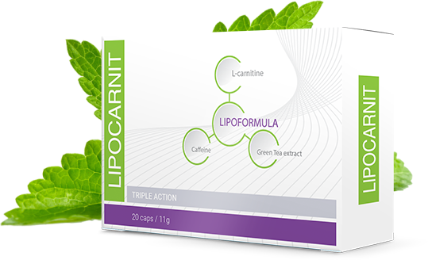

LIPOCARNIT

LIPOCARNIT
Помогает вернуть стройную фигуру без длительных диет и изнурительных тренировок
Преобразуя жир в энергию при помощи L-карнитина, зеленого чая и других натуральных компонентов
- Активизирует процесс сжигания подкожного жира, ускоряя процесс похудения
- Минимизирует отложение жиров, позволяя меньше беспокоиться о том, что вы едите
- Уменьшает излишний аппетит, помогая быстрее наедаться и не переедать